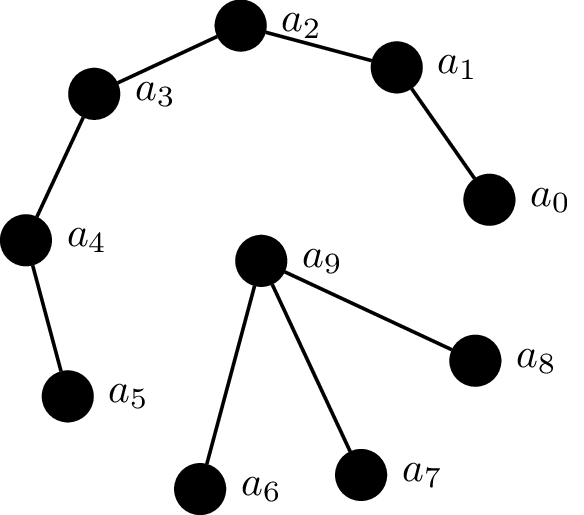
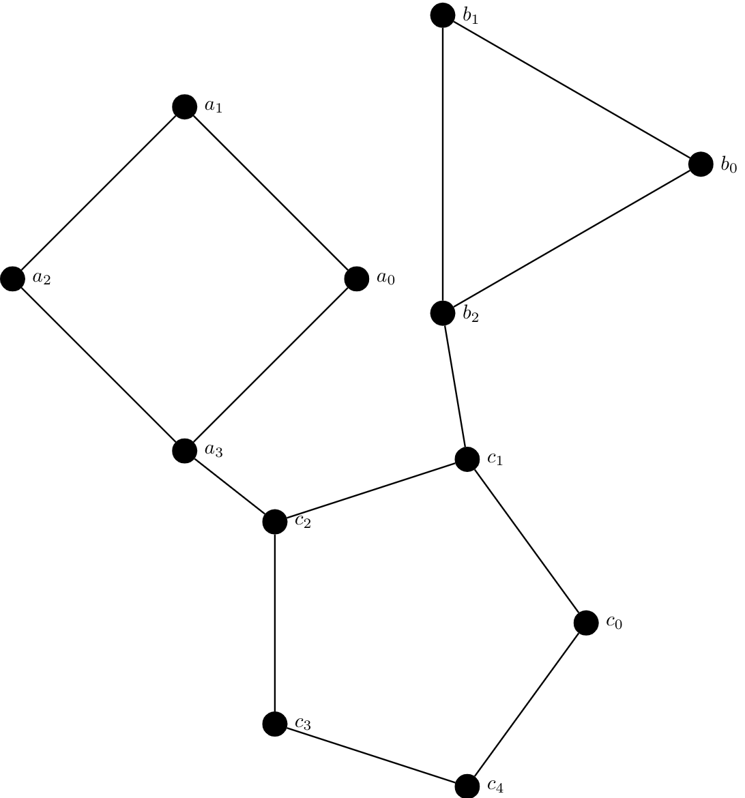
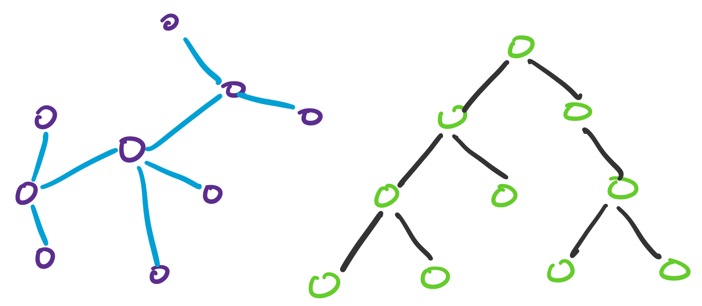

Here is a graph, with one possible spanning tree highlighted.

What does it mean if there's a walk between two vertices? Practically speaking, it means that we can reach one from the other. This idea leads to the following definition.
A graph $G$ is connected if it contains a path between every pair of vertices.
The graphs that we've seen so far have mostly been connected. However, we're not guaranteed to work with connected graphs, especially in real-world applications. In fact, we may want to test the connectedness of a graph. For that, we'll need to talk about the parts of a graph that are connected.
A (connected) component of a graph $G = (V,E)$ is a maximal connected subgraph $G$. In other words, it is a connected subgraph that cannot be made any larger while remaining connected.
Consider the following graph.

This graph has two components, the subgraphs induced by $a_0,\dots, a_5$ and $a_6,\dots,a_9$. No other can be considered a connected component since they would either be not connected or a proper subgraph of one of the two connected components we identified.
Another question related to connectivity that we can ask is how fragile the graph is. For instance, if we imagine some sort of network (computer, transportation, social, etc.), this is the same as asking where the points of failure are in our network. Which edges do we need to take out to disconnect our graph?
We say an edge $e=uv$ is a bridge if every path from $u$ to $v$ includes $e$.
Equivalently, $e=uv$ is a bridge if the graph $G - e$ (i.e. $G$ with $e$ deleted) has no path from $u$ to $v$.
Consider the following graph $G$. There are two visually-obvious bridges here: $a_3c_2$ and $b_2c_1$.

Bridges have a simple and interesting characterization: They are the edges that do not lie on any cycle.
Let $G$ be a graph. An edge $e$ of $G$ is a bridge if and only if it is not contained in any cycle of $G$.
This theorem has the propositional form $p \leftrightarrow \neg q$ ($p$ is "$e$ is a bridge" and $q$ is "$e$ lies on a cycle"). We will prove it by showing $\neg p \rightarrow q$ and $q \rightarrow \neg p$, which you can check is logically equivalent.
For the "$q \rightarrow \neg p$" part, assume that $e = uv$ lies on a cycle. Then there is a path $P$ in $G-e$ from $u$ to $v$: take the rest of the cycle except for $e$. Thus $e$ is not a bridge.
For the "$\neg p \rightarrow q$" part, suppose that $e=uv$ is not a bridge. Then $G-e$ contains a path from $u$ to $v$ that does not use $e$. Adding $e$ to this path forms a cycle.
This part is about a special and familiar class of graphs called trees. We used trees informally as a counting method in combinatorics, and you've likely done some programming with trees. In those cases the trees are usually rooted and drawn growing down from the root (like in a family tree or organizational chart). Our treatment will be more general, in that we won't designate a root. For example, the following are both trees:

Here's the general, non-rooted, definition that we will use:
A graph $G$ is a tree if $G$ is connected and contains no cycles. A graph $G$ with no cycles is a forest.
Note that the definition of a tree is quite simple, but it has a clear connection with our discussion of bridges and connectivity. Since a tree has no cycles, this means that every edge in a tree is a bridge. In other words, removing any edge in the graph will disconnect it.
The following are all equivalent:
For this type of theorem, we need to prove that each condition is equivalent. There are $\binom{3}{2}=3$ pairwise relationships being asserted, which results in $3 \cdot 2=6$ implications that we'd need to prove, but we don't need to do all of that work. Instead we'll prove a cycle of implications $1. \implies 2. \implies 3. \implies 1.$, and this will establish all of the pairwise implications.
$(1. \implies 2.)$ Suppose $T$ is a tree. Then $T$ is connected, and hence there is at least one path between every pair of vertices. There is only one distinct path between any pair of vertices because otherwise Theorem 11.3 would imply $T$ contains a cycle and hence is not a tree.
$(2. \implies 3.)$ Suppose there is a unique path between any pair of vertices in $T$. Then $T$ is connected. Let $e=uv$ be an edge of $T$. The only path from $u$ to $v$ is the edge $e$, so $T-e$ does not contain a path from $u$ to $v$. This shows that $e$ is a bridge.
$(3. \implies 1.)$ Suppose that $T$ is connected and every edge is a bridge. By Theorem 11.5, no edge lies on a cycle. This shows there are no cycles in $T$.
We next prove a structural theorem that is very useful for working with trees: They have leaves. For proofs, having leaves allows us to do induction on trees cleanly.
A vertex $v$ is called a leaf if $d(v)=1$.
Any tree with two or more vertices contains a leaf.
Let $T$ be a tree with at least two vertices. Note that $T$ contains at least one path; let $P$ be the longest path in $T$. Let $v_0,\ldots,v_k$ be the vertices of $P$ in order. We claim that $v_0$ is a leaf. Note that $d(v_0) \geq 1$ because $v_0$ is connected to $v_1$. Suppose, to obtain a contradiction, that $v_0$ is connected to some other vertex $u \neq v_1$. Note that $u$ is not in $P$, because otherwise $T$ would contain a cycle. But then $$u, v_0, \ldots, v_k$$ creates a longer path. Therefore we obtain a contradiction, and $v_0$ cannot be connected to some other vertex $u$.
Here is a nice application of this.
A tree $T$ with $n\geq 1$ vertices has exactly $n-1$ edges.
We will show this by induction on $n$.
Base case. A tree with $n = 1$ vertices contains $0 = 1 - 1$ edges, so our statement holds.
Inductive hypothesis. Let $n \geq 1$ be arbitrary and assume that every tree $T$ with $n$ vertices has $n-1$ edges.
Inductive step. Now, consider a tree $T' = (V,E)$ with $n+1$ vertices. By the previous theorem $T'$ contains a leaf $v$. Let $T = T'-v$ be the graph with $v$ and its edge deleted. Then $T$ is a tree with $n$ vertices, so by the inductive hypothesis $T$ has $n-1$ edges. Since we removed one edge to form $T$, $T'$ has $(n-1)+1 = n$ edges. This completes the induction.
We can apply the idea of a tree as a minimally connected graph to say something about connectivity in graphs in general. One clear application is finding a minimal connected subgraph of the graph such that every vertex is connected. One can see how this might be useful in something like road network where you're trying to figure out what the most important roads to clear after a snowfall are.
A spanning subgraph which is also a tree is called a spanning tree.
Here is a graph, with one possible spanning tree highlighted.
A graph $G$ is connected if and only if it has a spanning tree.
Suppose $G$ has a spanning tree $T$. Then there exists a path between every pair of vertices in $T$ and therefore, there exists a path between every pair of vertices in $G$. Then by definition, $G$ is connected.
Now, suppose $G$ is connected. Since it contains at least one connected spanning subgraph (i.e., itself), we can consider the connected spanning subgraph $H$ of $G$ with the minimal number of edges. If $H$ contained a cycle, then we could remove an edge from this cycle, and get a smaller connected spanning subgraph. Therefore, $H$ contains no cycles and since $H$ is connected, it is a tree.